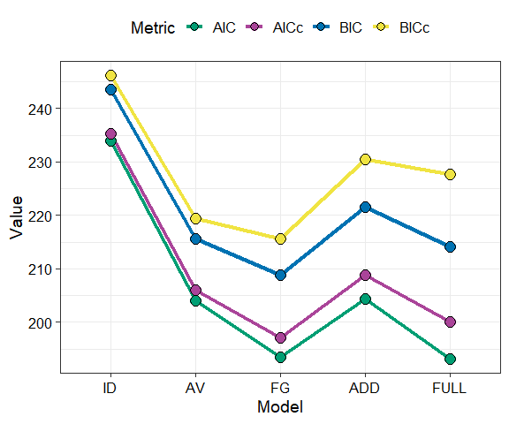
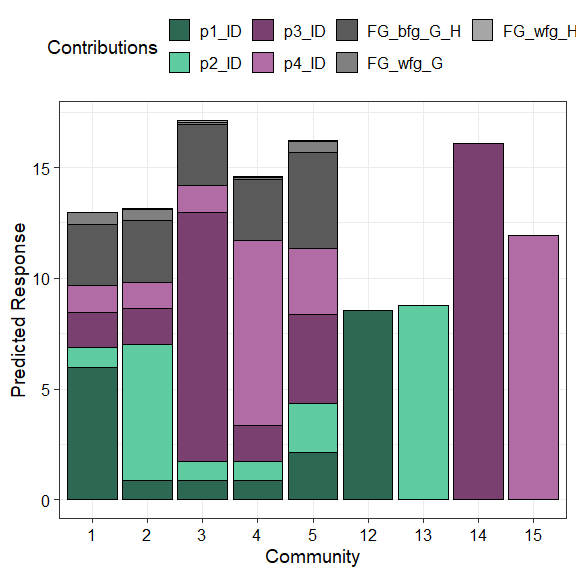
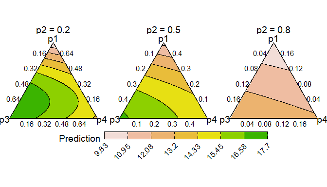
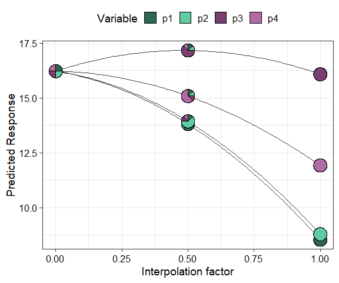

Statistical models fit to compositional data are often difficult to interpret due to the sum to one constraint on data variables. DImodelsVis provides novel visualisations tools to aid with the interpretation for models where the predictor space is compositional in nature. All visualisations in the package are created using the ggplot2 plotting framework and can be extended like every other ggplot object.
Installation
You can install the released version of DImodelsVis from CRAN by running:
install.packages("DImodelsVis")You can install the development version of DImodelsVis from GitHub with:
# install.packages("devtools")
devtools::install_github("rishvish/DImodelsVis")Details
Introduction to Diversity-Interactions (DI) models:
While sometimes it is of interest to model a compositional data response, there are times when the predictors of a response are compositional, rather than the response itself. Diversity-Interactions (DI) models (Kirwan et al., 2009, Connolly et al., 2013, Moral et al., 2023) are a regression based modelling technique for analysing and interpreting data from biodiversity experiments that explore the effects of species diversity on the different outputs (called ecosystem functions) produced by an ecosystem. Traditional techniques for analysing diversity experiments quantify species diversity in terms of species richness (i.e., the number of species present in a community). The DI method builds on top of this richness approach by taking the relative abundances of the species within in the community into account, thus the predictors in the model are compositional in nature. The DI approach can differentiate among different species identities as well as between communities with same set of species but with different relative proportions, thereby enabling us to better capture the relationship between diversity and ecosystem functions within an ecosystem. The DImodels and DImodelsMulti R packages are available to aid the user in fitting these models. The DImodelsVis (DI models Visualisation) package is a complimentary package for visualising and interpreting the results from these models. However, the package is versatile and can be used with any standard statistical model object in R where the predictor space is compositional in nature.
Package Map
The functions in the package can be categorised as functions for visualising model selection and validation or functions to aid with model interpretation. Here is a list of important visualisation functions present in the package along with a short description.
Model selection and validation
-
model_diagnostics: Create diagnostics plots for a statistical model with the additional ability to overlay the points with pie-glyphs showing the proportions of the compositional predictor variables. -
model_selection: Show a visual comparison of selection criteria of different models. Can also show the split of an information criteria into deviance and penalty components to visualise why a parsimonious model would be preferable over a complex one.
Model interpretation
-
prediction_contributions: The predicted response for observations is visualised as a stacked bar-chart showing the contributions of each term in the regression model. -
gradient_change: The predicted response for specific observations are shown using pie-glyphs along with the average change in the predicted response over the richness or evenness diversity gradients. -
conditional_ternary: Assuming we havencompositional variables, fixn-3variables to have specific values and visualise the change in the predicted response across the remaining three variables as a contour plot in a ternary diagram. -
visualise_effects: Visualise the effect of increasing or decreasing a predictor variable (from a set of compositional predictor variables) on the predicted response whilst keeping the ratio of the othern-1compositional predictor variables constant. -
simplex_path: Visualise the change in the predicted response along a straight line between two points in the simplex space.
Other utility functions
-
add_prediction: A utility function to add prediction and associated uncertainty to data using a statistical model object or raw model coefficients. -
get_equi_comms: Utility function to create all possible combinations of equi-proportional communities at a given level of richness from a set of n compositional variables. -
custom_filter: A handy wrapper around the dplyrfilter()function enabling the user to filter rows which satisfy specific conditions for compositional data like all equi-proportional communities, or communities with a given value of richness without having to make any changes to the data or adding any additional columns. -
prop_to_tern_projandtern_to_prop_proj: Helper functions for converting between 3-d compositional data and their 2-d projection.
-
ternary_dataandternary_plot: Visualise the change in the predicted response across a set of three compositional predictor variables as a contour map within a ternary diagram.
Examples
Load data
This dataset originates from a grassland biodiversity experiment conducted in Switzerland as part of the “Agrodiversity Experiment” Kirwan et al 2014. In this study, 68 grassland plots consisting of 1 to 4 species were established across a gradient of species diversity. The proportions of four species were varied across the plots: there were plots with 100% of a single species (called the monoculture of a species), and 2- and 4-species mixtures with varying proportions (e.g., (0.5, 0.5, 0, 0) and (0.7, 0.1, 0.1, 0.1)). Nitrogen fertilizer (at 50 or 150 kg/ha/yr) and seeding density (low or high) treatments were also manipulated across the plots. The total annual yield per plot was recorded for the first year after establishment. The data is available in the DImodels R package. An analysis of the this dataset can be found in Kirwan et al., 2009. For our example we only consider the plots that received the 150 kg nitrogen treatment. The four species proportions form our compositional predictors while the annual yield is our continuous response.
data(Switzerland)
my_data <- Switzerland[Switzerland$nitrogen == 150, ]
head(my_data)
#> plot nitrogen density p1 p2 p3 p4 yield
#> 1 1 150 high 0.70 0.10 0.10 0.10 13.51823
#> 2 2 150 high 0.10 0.70 0.10 0.10 13.16549
#> 3 3 150 high 0.10 0.10 0.70 0.10 19.95682
#> 4 4 150 high 0.10 0.10 0.10 0.70 17.93976
#> 5 5 150 high 0.25 0.25 0.25 0.25 13.74719
#> 6 6 150 high 0.40 0.40 0.10 0.10 15.11899Fit model with compositional data
We fit different models with different interaction structures as described in Moral et al., 2023.
mod_ID <- DI(y = "yield", prop = 4:7,
DImodel = "ID", data = my_data)
#> Fitted model: Species identity 'ID' DImodel
mod_AV <- DI(y = "yield", prop = 4:7,
DImodel = "AV", data = my_data)
#> Fitted model: Average interactions 'AV' DImodel
mod_FG <- DI(y = "yield", prop = 4:7,
DImodel = "FG", data = my_data,
FG = c("G", "G", "H", "H"))
#> Fitted model: Functional group effects 'FG' DImodel
mod_ADD <- DI(y = "yield", prop = 4:7,
DImodel = "ADD", data = my_data)
#> Fitted model: Additive species contributions to interactions 'ADD' DImodel
mod_FULL <- DI(y = "yield", prop = 4:7,
DImodel = "FULL", data = my_data)
#> Fitted model: Separate pairwise interactions 'FULL' DImodelModel selection and validation
Visualising model selection
We can visualise model selection by passing our models as a list to the model_selection function and visualising the best performing metric across different information criteria. Run ?model_selection or see the associated vignette for more information on customising the plot.
mods = list("ID" = mod_ID, "AV" = mod_AV, "FG" = mod_FG,
"ADD" = mod_ADD, "FULL" = mod_FULL)
model_selection(models = mods, metric = c("AIC", "AICc", "BIC", "BICc"))
The model mod_FG (labelled as “FG”) is the best model as it has the lowest value for all the information criteria. We proceed with this model.
The coefficients are as follows
summary(mod_FG)
#>
#> Call:
#> glm(formula = fmla, family = family, data = data)
#>
#> Coefficients:
#> Estimate Std. Error t value Pr(>|t|)
#> p1_ID 8.5406 0.7627 11.198 2.50e-14 ***
#> p2_ID 8.7926 0.7627 11.528 9.70e-15 ***
#> p3_ID 16.0825 0.7627 21.086 < 2e-16 ***
#> p4_ID 11.9263 0.7627 15.637 < 2e-16 ***
#> FG_bfg_G_H 17.3817 2.1713 8.005 4.66e-10 ***
#> FG_wfg_G 7.6604 4.4234 1.732 0.0905 .
#> FG_wfg_H 1.0119 4.4234 0.229 0.8201
#> ---
#> Signif. codes: 0 '***' 0.001 '**' 0.01 '*' 0.05 '.' 0.1 ' ' 1
#>
#> (Dispersion parameter for gaussian family taken to be 2.370592)
#>
#> Null deviance: 10290.75 on 50 degrees of freedom
#> Residual deviance: 101.94 on 43 degrees of freedom
#> AIC: 193.51
#>
#> Number of Fisher Scoring iterations: 2Model diagnostics
After choosing a model we can create diagnostics plot where the points are replaced by pie-glyphs showing the proportions of the compositional variables. Run ?model_diagnostics or see the associated vignette for more information on customising the plot.
model_diagnostics(model = mod_FG)
#> ✔ Created all plots.
Replacing the points with pie-glyphs could help us to quickly identify any problematic observations in the model. For example, we can see here that the diagnostics plots look fine and no assumptions seem to be violated. However, we can quickly spot that the all monocultures (communities with only 1 species) and certain communities with 2 species have high leverage values compared to all other communities in the data.
Model interpretation
Predictor contributions to predicted response
We visualise the predicted response for specific observations as a stacked bar-chart showing the contribution (predictor coefficient * predictor value) of each term in the model.
prediction_contributions(model = mod_FG,
data = my_data[c(1:5, 12:15),])
#> ✔ Finished data preparation.
#> ✔ Created plot.
The coloured bars show the contributions of the different terms in the model. The contribution is defined as the product of the coefficient and value for each predictor variable. Thus, the contribution for a term would be zero if it’s value in an observation is zero regardless of it’s coefficient value (e.g. prediction bars for the monocultures at the right of the graph).
This plot would aid in understanding why certain observations have higher predictions. For example, we can see that higher predictions are primarily driven by the p3_ID and p4_ID terms and hence the p1 and p2 monocultures have low predictions as the all the other terms have a value of zero here. Similarly, we can also see that mixtures dominated by p3 perform the best. Run ?prediction_contributions or see the associated vignette for more information on creating and customising the plot.
Average change in respone over diversity gradient
Next we show a scatterplot of the predicted response across all equi-proportional mixtures at each level of richness (number of species in a community). The points are replaced with pie-glyphs to show the proportions of the different species while the dashed black line shows the average change in response over the richness gradient.
# Create data including all equi-proportional communities at
# each level of richness
plot_data <- get_equi_comms(nvars = 4, variables = paste0("p", 1:4))
# Show the average change over richness
gradient_change(mod_FG, data = plot_data)
#> ✔ Finished data preparation
#> ✔ Created plot.This shows that on average the predicted response increases as richness increases but at a saturating rate. Run ?gradient_change or see the associated vignette for more information on creating and customising the plot.
Conditional ternary diagrams
Ternary diagrams are a great tool for visualising the change in a continuous response, however they can only be created for examples with three compositional variables. If we have more than three compositional variables we create conditional ternary diagrams where fix n-3 compositional variables to have specific values and visualise the change in the predicted response across the remaining three variables as a contour plot in a ternary diagram.
For this example, since we have four species we can condition one of the species (say p2) to have a specific values 0.2, 0.5, and 0.8 and see how the response is affected as we change the proportions of the other three species whilst ensuring that the sum of the four species proportions is 1.
conditional_ternary(model = mod_FG,
tern_vars = c("p1", "p3", "p4"),
conditional = data.frame("p2" = c(0.2, 0.5, 0.8)))
#> ✔ Finished data preparation.
#> ✔ Created plot.
This figure shows that the predicted response decreases as we increase the proportion of p2 and is maximised as we increase the proportion of p3. Run ?conditional_ternary or see the associated vignette for more information on creating and customising the plot.
Effects plots for models with compositional predictors
Effects plots are great for visualising the average effect of a predictor in a model. However, if the predictors are compositional in nature, then standard effects plots are not very useful because of the sum to 1 constraint. The visualise_effects function creates effects plot for the compositional predictors in a model by ensuring that the sum to one constraint is respected as we increase or decrease the proportion of a particular variable.
In this example we specify few communities using the data argument and see the change in the predicted response as we increase the proportions of the species p2 and p3in each community whilst keeping the ratio of the other species constant.
visualise_effects(model = mod_FG, data = my_data[1:15, ],
var_interest = c("p2", "p3"))
#> ✔ Finished data preparation.
#> ✔ Created plot.
The grey lines show the effect (on the predicted response) of increasing the species of interest within a particular community while the solid black line shows the average effect of increasing the proportion of a species on the predicted response. It can be seen that for all communities increasing p2 results in a decrease in the predicted response while increasing p3 has a positive effect on the predicted response. Run ?visualise_effects or see the associated vignette for more information on creating and customising the plot.
Simplex path
The concept used in visualise_effects can be extended to look at the change in the predicted response as we move in a straight line between any two points within the simplex space. The interpolation constant (shown on the X-axis) is a number between 0 and 1 identifying points along the straight line between the start and end points. We can even traverse a path comprising of multiple points within the simplex and see the change in the predicted response. In this example we show the change in the response as we move from the centroid mixture to the monoculture of each of the four species.
simplex_path(model = mod_FG,
starts = my_data[5, ],
ends = my_data[12:15, ])
#> ✔ Finished data preparation.
#> ✔ Created plot.
We can see that moving from the centroid community to p1, p2, and p4 decreases the predicted response, while moving towards a monoculture of p3 increases the response. Run ?simplex_path or see the associated vignette for more information on creating and customising the plot.
See Also
Useful links:
- DI models website: https://dimodels.com
- Package website: https://rishvish.github.io/DImodelsVis/
- Github repo: https://github.com/rishvish/DImodelsVis
- Report bugs: https://github.com/rishvish/DImodelsVis/issues
References
- Connolly J, T Bell, T Bolger, C Brophy, T Carnus, JA Finn, L Kirwan, F Isbell, J Levine, A Lüscher, V Picasso, C Roscher, MT Sebastia, M Suter and A Weigelt (2013) An improved model to predict the effects of changing biodiversity levels on ecosystem function. Journal of Ecology, 101, 344-355.
- Moral, R.A., Vishwakarma, R., Connolly, J., Byrne, L., Hurley, C., Finn, J.A. and Brophy, C., 2023. Going beyond richness: Modelling the BEF relationship using species identity, evenness, richness and species interactions via the DImodels R package. Methods in Ecology and Evolution, 14(9), pp.2250-2258
- Kirwan L., Connolly J., Finn J.A., Brophy C., Lüscher A., Nyfeler D. and Sebastia M.T. 2009. Diversity-interaction modelling - estimating contributions of species identities and interactions to ecosystem function. Ecology, 90, 2032-2038.
- Kirwan, L., Connolly, J., Brophy, C., Baadshaug, O.H., Belanger, G., Black, A., Carnus, T., Collins, R.P., Čop, J., Delgado, I. and De Vliegher, A., 2014. The Agrodiversity Experiment: three years of data from a multisite study in intensively managed grasslands.